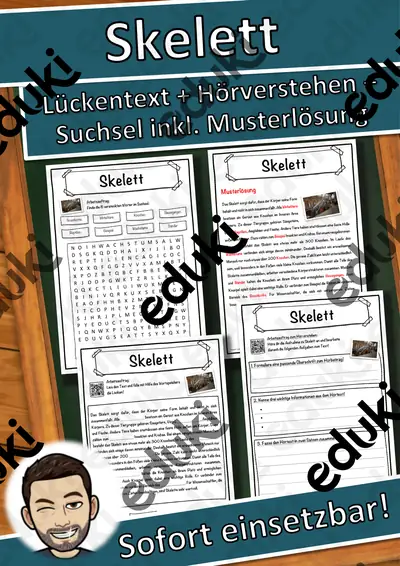

Körper, Skelett und Muskeln: Arbeitsblätter für Klasse 2–7 (Biologie)
Der menschliche Körper gehört in Sachunterricht und Biologie zu den Dauerthemen. Zuerst werden Körperteile, Knochen und Muskeln benannt, später folgen Gelenke, Bewegungsapparat und Körperpflege.
Typische Bausteine der Einheit sind Skelett, Knochen und Muskeln; darauf aufbauend kommen Gelenke, Wirbelsäule und Schädel zur Sprache.
Je nach Bundesland variiert die genaue Einordnung; üblich ist das Fach Biologie in den Klassen 2 bis 7. Die Schülerinnen und Schüler benennen wichtige Knochen und erklären, wie Muskeln Bewegung bewirken.
Für den Einstieg in Körper, Skelett und Muskeln bieten sich Aufgaben zu Skelett an, zum Üben solche zu Knochen und Muskeln, zur Wiederholung vor einer Lernkontrolle ein Blick auf Schädel. Die Lösungen liegen bei, sodass im Unterricht niemand nachschlagen muss. Zur Differenzierung eignen sich die Lesespurgeschichten mit ihren drei Niveaustufen.
Die Auswahl zum Thema umfasst derzeit 16 Titel, zum Beispiel Halloween Wackel-Skelett, Der Muskel und Der Knochen. Dazu zählen 6 Lesespurgeschichten, 1 Bastelvorlage, 2 Prüfungstrainings und 6 Lückentexte mit Hörverstehen für Klasse 3–8. Ein Skelettmodell auf Papier, das die Kinder selbst zusammenstecken, speichert die Namen besser als eine Tafelskizze.
Das gehört zum Thema
Passende Arbeitsblätter und Materialpakete

Halloween Wackel-Skelett – Bastelvorlage, Sachtext Skelett und Knochen beschriften, 3-fach differenziert (Klasse 3/4)

Der Muskel – Lesespurgeschichte mit Rätselaufgaben (Klasse 8)

Der Knochen – Lesespurgeschichte mit Rätselaufgaben (Klasse 8)

Der Schädel – Lesespurgeschichte mit Rätselaufgaben (Klasse 8)

Die Wirbelsäule – Lesespurgeschichte mit Rätselaufgaben (Klasse 8)

Die Muskeln – Lesespurgeschichte mit Rätselaufgaben (Klasse 7)

Das Skelett – Lesespurgeschichte mit Rätselaufgaben (Klasse 7)

Die Muskeln – Prüfungstraining Biologie (Klasse 8)

Das Skelett – Prüfungstraining Biologie (Klasse 8)

Skelett Lückentext mit Wortspeicher Hörverstehen und Suchsel
Schädel Lückentext mit Wortspeicher Hörverstehen und Suchsel

Wirbelsäule Lückentext mit Wortspeicher Hörverstehen und Suchsel

Muskel Lückentext mit Wortspeicher Hörverstehen und Suchsel

Knochen Lückentext mit Wortspeicher Hörverstehen und Suchsel

Gelenk Lückentext mit Wortspeicher Hörverstehen und Suchsel

Halloween-Schädel - Kunst - Tag der Toten - Día de Muertos
Häufige Fragen
Für welche Klassenstufe passen die Arbeitsblätter zu Körper, Skelett und Muskeln?
Passend sind Klasse 3–8. Von den 16 Titeln wenden sich die meisten an Klasse 8, einige lassen sich differenzierend auch in benachbarten Stufen nutzen.
Welche Inhalte decken die Materialien zu Körper, Skelett und Muskeln ab?
Inhaltlich reicht die Auswahl von Skelett über Knochen und Muskeln bis zu Wirbelsäule; Details stehen bei den einzelnen Materialien.
Wie setze ich Körper, Skelett und Muskeln im Unterricht ein?
Beginnen Sie mit einem Einstieg zu Skelett und ergänzen Sie nach Bedarf. Ein Skelettmodell auf Papier, das die Kinder selbst zusammenstecken, speichert die Namen besser als eine Tafelskizze.
Mehr Material nach Fach und Klasse
- Alle Materialien Biologie
- Arbeitsblätter Biologie Klasse 2
- Arbeitsblätter Biologie Klasse 3
- Arbeitsblätter Biologie Klasse 4
- Arbeitsblätter Biologie Klasse 5
- Arbeitsblätter Biologie Klasse 6
- Arbeitsblätter Biologie Klasse 7
- Unterrichtsmaterial Klasse 2
- Unterrichtsmaterial Klasse 3
- Unterrichtsmaterial Klasse 4
- Unterrichtsmaterial Klasse 5
- Unterrichtsmaterial Klasse 6
- Unterrichtsmaterial Klasse 7
Verwandte Lehrplanthemen
- Säugetiere (Biologie, Klasse 3–8)
- Sinnesorgane (Biologie, Klasse 2–8)
- Atmung, Verdauung und Organe (Biologie, Klasse 5–9)
- Fische und Meerestiere (Biologie, Klasse 4–8)
- Fotosynthese (Biologie, Klasse 5–9)